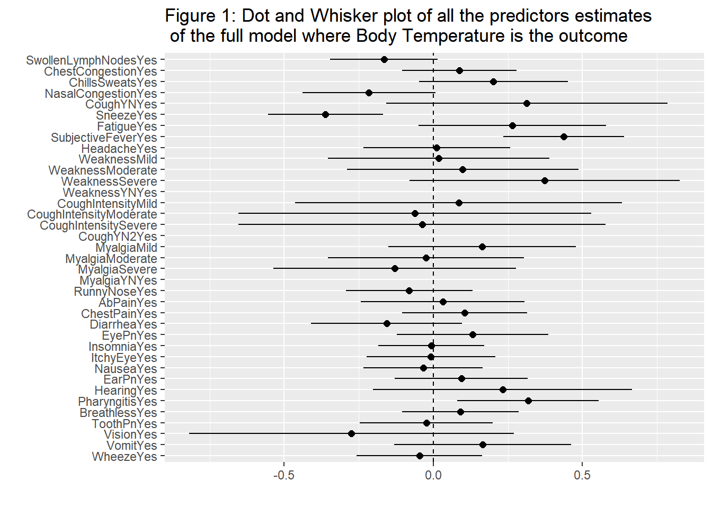
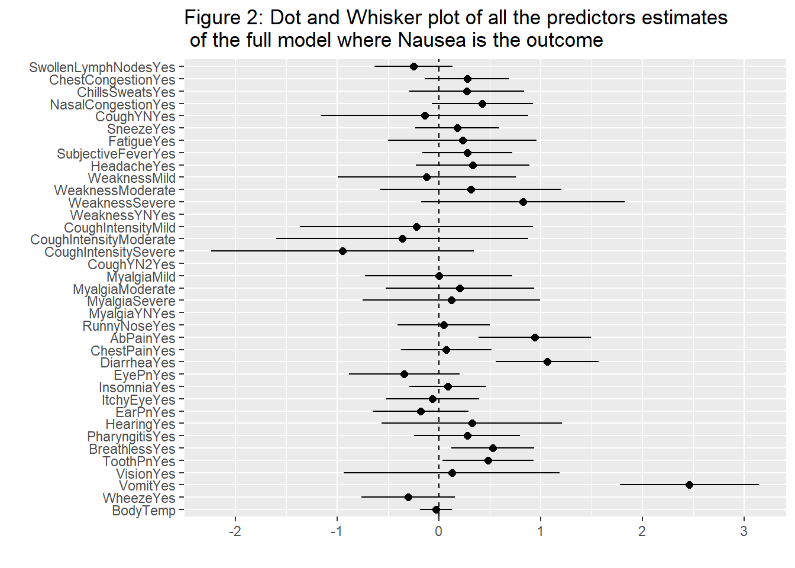

This is the first part of my analysis for the nasuea and body temperature data set. I will be performing general simple and multivariate modeling using linear regression and logistic regression. I will also be comparing some models using simple comparison techniques.
To find the full analysis on this data set, click on this link and it will take you to my github repository.
#Data Preparation
#load needed packages.
library(ggplot2) #for plotting
library(broom) #for cleaning up output from lm()
library(here) #for data loading/saving## here() starts at C:/Users/socce/Downloads/BIOS8060/DawsonDobash-MADA-portfoliolibrary(tidymodels)## Registered S3 method overwritten by 'tune':
## method from
## required_pkgs.model_spec parsnip## -- Attaching packages -------------------------------------- tidymodels 0.1.4 --## v dials 0.0.10 v rsample 0.1.0
## v dplyr 1.0.7 v tibble 3.1.5
## v infer 1.0.0 v tidyr 1.1.4
## v modeldata 0.1.1 v tune 0.1.6
## v parsnip 0.1.7 v workflows 0.2.4
## v purrr 0.3.4 v workflowsets 0.1.0
## v recipes 0.1.17 v yardstick 0.0.8## -- Conflicts ----------------------------------------- tidymodels_conflicts() --
## x purrr::discard() masks scales::discard()
## x dplyr::filter() masks stats::filter()
## x dplyr::lag() masks stats::lag()
## x recipes::step() masks stats::step()
## * Use suppressPackageStartupMessages() to eliminate package startup messageslibrary(dotwhisker)
#path to data
data_location <- here::here("files" ,"processeddata.rds")
#load data.
mydata <- readRDS(data_location)#We are making a path to use for linear regression. This will be used to create my linear models using tidymodels
lm_mod <- linear_reg() %>% set_engine("lm")
#Linear regression model for body temperature with only main predictor runnynose
lm_fit1 <- lm_mod %>% fit(BodyTemp ~ RunnyNose, data = mydata)
#This creates a clean table describing the runnynose model on body temperature.
#We can see that the runny nose is significant in predicting body temperature. If someone has a runny nose, then the
#person's body temperature will decrease in 0.29 degrees Fahrenheit.
lmtab1 = tidy(lm_fit1)
lmtab1## # A tibble: 2 x 5
## term estimate std.error statistic p.value
## <chr> <dbl> <dbl> <dbl> <dbl>
## 1 (Intercept) 99.1 0.0819 1210. 0
## 2 RunnyNoseYes -0.293 0.0971 -3.01 0.00268#Glance is looking at some more statistics on the linear model.
#Although runny nose is significant, the model does not fit the data well.
glance(lm_fit1)## # A tibble: 1 x 12
## r.squared adj.r.squared sigma statistic p.value df logLik AIC BIC
## <dbl> <dbl> <dbl> <dbl> <dbl> <dbl> <dbl> <dbl> <dbl>
## 1 0.0123 0.0110 1.19 9.08 0.00268 1 -1162. 2329. 2343.
## # ... with 3 more variables: deviance <dbl>, df.residual <int>, nobs <int>#Linear regression model for body temperature with all predictors
lm_fit2 <- lm_mod %>% fit(BodyTemp ~ ., data = mydata)
#This is a clean table looking at the model for body temperature with all predictors.
lmtab2 = tidy(lm_fit2)
lmtab2## # A tibble: 38 x 5
## term estimate std.error statistic p.value
## <chr> <dbl> <dbl> <dbl> <dbl>
## 1 (Intercept) 97.9 0.304 322. 0
## 2 SwollenLymphNodesYes -0.165 0.0920 -1.80 0.0727
## 3 ChestCongestionYes 0.0873 0.0975 0.895 0.371
## 4 ChillsSweatsYes 0.201 0.127 1.58 0.114
## 5 NasalCongestionYes -0.216 0.114 -1.90 0.0584
## 6 CoughYNYes 0.314 0.241 1.30 0.193
## 7 SneezeYes -0.362 0.0983 -3.68 0.000249
## 8 FatigueYes 0.265 0.161 1.65 0.0996
## 9 SubjectiveFeverYes 0.437 0.103 4.22 0.0000271
## 10 HeadacheYes 0.0115 0.125 0.0913 0.927
## # ... with 28 more rows#This is statistics of the overall model.
#Although we have all predictors, the model fit is still not good
glance(lm_fit2)## # A tibble: 1 x 12
## r.squared adj.r.squared sigma statistic p.value df logLik AIC BIC
## <dbl> <dbl> <dbl> <dbl> <dbl> <dbl> <dbl> <dbl> <dbl>
## 1 0.129 0.0860 1.14 3.02 0.0000000420 34 -1116. 2304. 2469.
## # ... with 3 more variables: deviance <dbl>, df.residual <int>, nobs <int>#This is a dot and whisker plot which shows the estimates for each predictor better than the table does especially
#Since there are so many variables within this model. There is nor many variables that arent in the range of 0.
plot1 = tidy(lm_fit2) %>%
dwplot(dot_args = list(size = 2, color = "black"),
whisker_args = list(color = "black"),
vline = geom_vline(xintercept = 0, linetype = 2)) + ggtitle("Figure 1: Dot and Whisker plot of all the predictors estimates \n of the full model where Body Temperature is the outcome")
plot1
#Anova is used to compare the two linear models for predicting body temperature.
#The model with all predictors is significantly better than the model with only runny nose.
CompMod1 = anova(lm_fit1$fit,lm_fit2$fit, data = mydata, test= "Chisq")## Warning in anova.lmlist(object, ...): models with response '"NULL"' removed
## because response differs from model 1tidy(CompMod1)## # A tibble: 2 x 5
## res.df rss df sumsq p.value
## <dbl> <dbl> <dbl> <dbl> <dbl>
## 1 728 1031. NA NA NA
## 2 695 909. 33 121. 0.000000136#Creating a path for making logistic models through tidymodels
log_mod <- logistic_reg() %>% set_engine("glm")
#A logistic model for nausea with main predictor runny nose
log_fit1 <- log_mod %>% fit(Nausea ~ RunnyNose, data = mydata)
#A table showing how runny nose affects nausea.
#We can see that runny nose is not a good predictor for nausea at least not significant.
logtab1 = tidy(log_fit1)
logtab1## # A tibble: 2 x 5
## term estimate std.error statistic p.value
## <chr> <dbl> <dbl> <dbl> <dbl>
## 1 (Intercept) -0.658 0.145 -4.53 0.00000589
## 2 RunnyNoseYes 0.0502 0.172 0.292 0.770#Statistics over the logistic regression model based on only runny nose. (Fitting of model)
glance(log_fit1)## # A tibble: 1 x 8
## null.deviance df.null logLik AIC BIC deviance df.residual nobs
## <dbl> <int> <dbl> <dbl> <dbl> <dbl> <int> <int>
## 1 945. 729 -472. 949. 958. 945. 728 730#Logistic regression model of nausea with all predictors
log_fit2 <- log_mod %>% fit(Nausea ~ ., data = mydata)
#A table showing information of the nausea vs all predictors model.
logtab2 = tidy(log_fit2)
logtab2## # A tibble: 38 x 5
## term estimate std.error statistic p.value
## <chr> <dbl> <dbl> <dbl> <dbl>
## 1 (Intercept) 0.223 7.83 0.0285 0.977
## 2 SwollenLymphNodesYes -0.251 0.196 -1.28 0.200
## 3 ChestCongestionYes 0.276 0.213 1.30 0.195
## 4 ChillsSweatsYes 0.274 0.288 0.952 0.341
## 5 NasalCongestionYes 0.426 0.255 1.67 0.0944
## 6 CoughYNYes -0.140 0.519 -0.271 0.787
## 7 SneezeYes 0.177 0.210 0.840 0.401
## 8 FatigueYes 0.229 0.372 0.616 0.538
## 9 SubjectiveFeverYes 0.278 0.225 1.23 0.218
## 10 HeadacheYes 0.331 0.285 1.16 0.245
## # ... with 28 more rows#Statistics of logistic regression model (fitting of model on data)
glance(log_fit2)## # A tibble: 1 x 8
## null.deviance df.null logLik AIC BIC deviance df.residual nobs
## <dbl> <int> <dbl> <dbl> <dbl> <dbl> <int> <int>
## 1 945. 729 -376. 821. 982. 751. 695 730#This is a dot and whisker plot which shows the estimates for each predictor better than the table does especially
#Since there are so many variables within this model. We can see that vomit is significantly different from
#an estimate of 0. This variable has a large effect on nausea than any other predictor.
plot2 = tidy(log_fit2) %>%
dwplot(dot_args = list(size = 2, color = "black"),
whisker_args = list(color = "black"),
vline = geom_vline(xintercept = 0, linetype = 2)) + ggtitle("Figure 2: Dot and Whisker plot of all the predictors estimates \n of the full model where Nausea is the outcome")
plot2
#Anova to compare the two logistic models with the test of chi-square
#We can see that the full model is significantly different from just the model with the main predictor runny nose
CompMod2 = anova(log_fit1$fit,log_fit2$fit, data = mydata, test = "Chisq")## Warning in anova.glm(log_fit1$fit, log_fit2$fit, data = mydata, test = "Chisq"):
## the following arguments to 'anova.glm' are invalid and dropped: list(data =
## structure(list(SwollenLymphNodes = structure(c(2L, , 2L, 2L, 2L, 2L, 1L, 1L,
## 1L, 2L, 1L, 2L, 2L, 1L, 2L, 2L, 1L, 1L, , 2L, 2L, 2L, 1L, 2L, 1L, 2L, 1L, 1L,
## 1L, 2L, 2L, 1L, 2L, 1L, 1L, , 2L, 1L, 1L, 1L, 2L, 1L, 2L, 1L, 2L, 1L, 1L, 1L,
## 2L, 1L, 1L, 1L, , 1L, 1L, 1L, 1L, 2L, 2L, 1L, 1L, 1L, 1L, 1L, 1L, 1L, 2L, 2L,
## 2L, , 2L, 1L, 2L, 2L, 2L, 2L, 2L, 1L, 1L, 1L, 1L, 2L, 1L, 2L, 2L, 1L, , 1L,
## 2L, 1L, 2L, 2L, 2L, 1L, 1L, 1L, 1L, 1L, 1L, 1L, 1L, 1L, 2L, , 2L, 1L, 1L, 1L,
## 1L, 2L, 2L, 1L, 1L, 1L, 1L, 1L, 2L, 1L, 1L, 2L, , 1L, 1L, 1L, 2L, 1L, 1L, 2L,
## 1L, 1L, 1L, 2L, 2L, 1L, 1L, 2L, 2L, , 1L, 2L, 2L, 1L, 1L, 1L, 1L, 1L, 1L, 2L,
## 2L, 1L, 2L, 1L, 2L, 1L, , 2L, 1L, 1L, 2L, 2L, 1L, 1L, 1L, 1L, 1L, 1L, 2L, 1L,
## 1L, 2L, 1L, , 2L, 2L, 1L, 1L, 1L, 1L, 2L, 1L, 2L, 1L, 2L, 2L, 2L, 2L, 1L, 1L, ,
## 1L, 1L, 1L, 1L, 2L, 1L, 2L, 1L, 2L, 1L, 1L, 2L, 1L, 1L, 1L, 2L, , 1L, 1L, 1L,
## 2L, 1L, 1L, 1L, 1L, 1L, 1L, 1L, 1L, 2L, 2L, 2L, 2L, , 1L, 1L, 1L, 2L, 2L, 1L,
## 1L, 2L, 2L, 1L, 1L, 1L, 2L, 1L, 2L, 1L, , 1L, 1L, 2L, 1L, 2L, 1L, 1L, 2L, 2L,
## 1L, 1L, 2L, 1L, 2L, 1L, 1L, , 1L, 2L, 2L, 1L, 1L, 1L, 1L, 1L, 2L, 2L, 2L, 2L,
## 1L, 2L, 2L, 1L, , 1L, 1L, 2L, 1L, 2L, 1L, 1L, 1L, 2L, 2L, 1L, 2L, 1L, 2L, 1L,
## 1L, , 1L, 1L, 1L, 1L, 1L, 2L, 2L, 2L, 2L, 1L, 2L, 1L, 2L, 2L, 2L, 2L, , 1L,
## 1L, 2L, 1L, 2L, 1L, 1L, 2L, 2L, 2L, 2L, 1L, 1L, 1L, 1L, 1L, , 1L, 2L, 2L, 1L,
## 1L, 1L, 1L, 1L, 2L, 1L, 1L, 2L, 1L, 1L, 2L, 1L, , 1L, 2L, 2L, 2L, 1L, 2L, 1L,
## 2L, 1L, 1L, 2L, 2L, 1L, 1L, 1L, 2L, , 2L, 1L, 1L, 1L, 2L, 1L, 1L, 2L, 1L, 2L,
## 2L, 2L, 2L, 2L, 1L, 1L, , 1L, 2L, 2L, 2L, 2L, 2L, 1L, 2L, 1L, 1L, 2L, 2L, 1L,
## 1L, 2L, 2L, , 2L, 2L, 1L, 1L, 2L, 1L, 2L, 1L, 1L, 1L, 2L, 1L, 2L, 1L, 2L, 1L, ,
## 2L, 1L, 1L, 1L, 1L, 1L, 1L, 2L, 1L, 2L, 1L, 2L, 1L, 2L, 2L, 1L, , 1L, 2L, 1L,
## 1L, 2L, 1L, 1L, 1L, 2L, 2L, 1L, 2L, 1L, 2L, 2L, 1L, , 1L, 1L, 2L, 2L, 1L, 2L,
## 2L, 1L, 1L, 1L, 1L, 2L, 1L, 1L, 2L, 1L, , 1L, 1L, 2L, 2L, 1L, 1L, 1L, 1L, 1L,
## 1L, 2L, 2L, 2L, 2L, 1L, 2L, , 1L, 1L, 1L, 2L, 1L, 1L, 1L, 2L, 1L, 2L, 1L, 2L,
## 2L, 1L, 2L, 1L, , 2L, 1L, 1L, 2L, 1L, 2L, 2L, 1L, 2L, 1L, 1L, 2L, 1L, 2L, 1L,
## 1L, , 2L, 2L, 2L, 2L, 1L, 2L, 1L, 2L, 2L, 2L, 2L, 2L, 1L, 1L, 1L, 2L, , 1L,
## 2L, 1L, 2L, 1L, 1L, 2L, 1L, 1L, 2L, 2L, 2L, 1L, 1L, 1L, 2L, , 2L, 1L, 1L, 1L,
## 1L, 1L, 2L, 2L, 1L, 2L, 1L, 1L, 1L, 2L, 1L, 1L, , 1L, 1L, 2L, 2L, 2L, 2L, 1L,
## 1L, 2L, 1L, 2L, 1L, 2L, 2L, 2L, 1L, , 1L, 1L, 2L, 1L, 1L, 2L, 1L, 2L, 2L, 2L,
## 2L, 1L, 1L, 1L, 2L, 2L, , 1L, 2L, 1L, 1L, 1L, 1L, 2L, 2L, 1L, 1L, 2L, 2L, 2L,
## 1L, 1L, 1L, , 1L, 1L, 2L, 1L, 1L, 1L, 2L, 2L, 1L, 2L, 2L, 2L, 2L, 2L, 1L, 1L, ,
## 1L, 2L, 1L, 2L, 2L, 1L, 2L, 2L, 1L, 2L, 1L, 2L, 2L, 1L, 2L, 1L, , 2L, 1L, 1L,
## 2L, 1L, 1L, 1L, 1L, 1L, 2L, 1L, 1L, 2L, 1L, 2L, 2L, , 2L, 2L, 2L, 2L, 1L, 2L,
## 2L, 1L, 1L, 1L, 1L, 1L, 2L, 1L, 1L, 1L, , 1L, 2L, 2L, 2L, 1L, 1L, 1L, 1L, 1L,
## 2L, 1L, 1L, 2L, 1L, 2L, 1L, , 1L, 1L, 2L, 2L, 2L, 1L, 2L, 2L, 2L, 1L, 1L, 2L,
## 1L, 2L, 2L, 2L, , 1L, 1L, 2L, 1L, 1L, 2L, 1L, 2L, 1L, 1L, 2L, 1L, 1L, 2L, 1L,
## 1L, , 2L, 1L, 1L, 1L, 1L, 1L, 2L, 1L, 2L, 1L, 1L, 1L, 1L, 1L, 2L, 1L, , 2L, 1L,
## 2L, 2L, 2L, 2L, 1L, 1L, 2L, 1L, 2L, 1L, 1L, 2L, 1L, 1L, , 2L, 2L, 1L, 1L, 1L,
## 2L, 1L, 1L, 1L), .Label = c("No", "Yes"), label = "Swollen Lymph Nodes", class
## = "factor"), , ChestCongestion = structure(c(1L, 2L, 2L, 2L, 1L, 1L, 1L, , 2L,
## 2L, 2L, 2L, 2L, 1L, 2L, 2L, 2L, 1L, 2L, 2L, 2L, 2L, 1L, , 2L, 2L, 1L, 1L, 2L,
## 2L, 2L, 2L, 1L, 1L, 2L, 2L, 1L, 1L, 1L, , 2L, 1L, 2L, 1L, 2L, 2L, 1L, 1L, 2L,
## 2L, 1L, 2L, 2L, 2L, 1L, , 2L, 1L, 2L, 2L, 1L, 1L, 1L, 2L, 1L, 1L, 1L, 2L, 1L,
## 1L, 1L, , 2L, 2L, 2L, 2L, 1L, 2L, 2L, 1L, 2L, 2L, 2L, 2L, 1L, 2L, 2L, , 1L,
## 2L, 2L, 2L, 1L, 2L, 1L, 2L, 2L, 2L, 1L, 2L, 2L, 1L, 2L, , 1L, 1L, 2L, 2L, 2L,
## 1L, 1L, 2L, 2L, 2L, 2L, 1L, 1L, 2L, 2L, , 2L, 2L, 1L, 1L, 2L, 2L, 1L, 2L, 1L,
## 1L, 1L, 2L, 2L, 1L, 1L, , 2L, 1L, 2L, 1L, 2L, 1L, 1L, 1L, 2L, 1L, 2L, 2L, 2L,
## 2L, 2L, , 1L, 2L, 1L, 2L, 2L, 2L, 2L, 2L, 2L, 1L, 2L, 1L, 1L, 2L, 2L, , 1L, 2L,
## 1L, 2L, 2L, 2L, 2L, 1L, 1L, 2L, 1L, 2L, 2L, 1L, 1L, , 2L, 1L, 2L, 2L, 2L, 1L,
## 1L, 2L, 2L, 2L, 1L, 2L, 2L, 2L, 2L, , 2L, 2L, 2L, 1L, 1L, 2L, 1L, 2L, 1L, 2L,
## 1L, 2L, 1L, 2L, 1L, , 2L, 2L, 1L, 1L, 1L, 1L, 2L, 1L, 2L, 1L, 2L, 2L, 2L, 2L,
## 2L, , 2L, 1L, 1L, 1L, 1L, 2L, 2L, 2L, 1L, 2L, 2L, 2L, 1L, 2L, 2L, , 2L, 2L, 2L,
## 1L, 2L, 2L, 2L, 2L, 2L, 2L, 2L, 1L, 2L, 2L, 2L, , 2L, 1L, 1L, 1L, 2L, 1L, 2L,
## 1L, 1L, 1L, 1L, 2L, 1L, 2L, 2L, , 2L, 1L, 2L, 2L, 2L, 1L, 2L, 2L, 1L, 1L, 2L,
## 2L, 1L, 1L, 2L, , 2L, 1L, 2L, 2L, 2L, 2L, 1L, 1L, 2L, 2L, 1L, 1L, 2L, 2L, 1L, ,
## 1L, 1L, 2L, 2L, 2L, 1L, 2L, 2L, 1L, 1L, 1L, 2L, 1L, 2L, 1L, , 1L, 1L, 1L, 1L,
## 1L, 1L, 1L, 2L, 1L, 1L, 2L, 1L, 1L, 1L, 1L, , 1L, 2L, 2L, 2L, 2L, 2L, 1L, 2L,
## 2L, 2L, 2L, 1L, 2L, 2L, 2L, , 1L, 2L, 1L, 2L, 1L, 2L, 1L, 1L, 2L, 2L, 2L, 1L,
## 2L, 2L, 2L, , 1L, 2L, 1L, 1L, 2L, 2L, 2L, 2L, 2L, 1L, 2L, 2L, 2L, 2L, 1L, , 2L,
## 1L, 2L, 2L, 1L, 2L, 2L, 1L, 1L, 1L, 1L, 1L, 2L, 2L, 1L, , 2L, 1L, 1L, 1L, 2L,
## 1L, 1L, 1L, 1L, 1L, 1L, 1L, 2L, 1L, 2L, , 2L, 2L, 2L, 1L, 2L, 2L, 2L, 2L, 2L,
## 1L, 1L, 1L, 1L, 1L, 2L, , 2L, 1L, 2L, 2L, 2L, 1L, 2L, 1L, 2L, 1L, 2L, 1L, 2L,
## 1L, 1L, , 1L, 2L, 1L, 1L, 2L, 2L, 2L, 2L, 2L, 1L, 1L, 2L, 2L, 1L, 1L, , 2L, 1L,
## 2L, 2L, 1L, 2L, 2L, 1L, 1L, 1L, 2L, 2L, 1L, 2L, 2L, , 1L, 2L, 1L, 2L, 1L, 1L,
## 2L, 1L, 2L, 1L, 1L, 1L, 2L, 2L, 1L, , 1L, 2L, 1L, 1L, 1L, 2L, 1L, 1L, 1L, 2L,
## 1L, 2L, 1L, 2L, 2L, , 1L, 1L, 2L, 2L, 1L, 1L, 2L, 2L, 1L, 1L, 1L, 2L, 2L, 1L,
## 2L, , 2L, 1L, 1L, 2L, 2L, 2L, 2L, 2L, 2L, 2L, 1L, 2L, 1L, 2L, 1L, , 2L, 2L, 2L,
## 2L, 2L, 1L, 1L, 2L, 1L, 1L, 2L, 1L, 2L, 1L, 1L, , 2L, 1L, 2L, 1L, 1L, 1L, 2L,
## 1L, 1L, 1L, 1L, 2L, 2L, 2L, 2L, , 2L, 1L, 2L, 1L, 1L, 2L, 1L, 2L, 2L, 2L, 2L,
## 1L, 1L, 2L, 2L, , 2L, 2L, 1L, 2L, 2L, 1L, 2L, 1L, 2L, 2L, 1L, 2L, 1L, 1L, 2L, ,
## 1L, 2L, 2L, 1L, 1L, 2L, 1L, 1L, 2L, 1L, 2L, 1L, 1L, 1L, 2L, , 1L, 1L, 2L, 2L,
## 1L, 2L, 2L, 1L, 1L, 1L, 2L, 2L, 2L, 2L, 2L, , 1L, 1L, 1L, 1L, 2L, 2L, 2L, 1L,
## 1L, 2L, 1L, 2L, 1L, 2L, 2L, , 2L, 2L, 2L, 1L, 2L, 1L, 2L, 1L, 2L, 2L, 2L, 2L,
## 1L, 1L, 1L, , 2L, 2L, 1L, 2L, 2L, 2L, 2L, 2L, 2L, 1L, 1L, 1L, 1L, 2L, 1L, , 2L,
## 2L, 1L, 1L, 1L, 2L, 2L, 2L, 2L, 1L, 2L, 1L, 2L, 1L, 1L, , 2L, 2L, 2L, 2L, 1L,
## 2L, 2L, 2L, 2L, 1L, 1L, 2L, 2L, 1L, 2L, , 2L, 2L, 1L, 1L, 2L, 2L, 1L, 2L, 2L,
## 2L, 1L, 2L, 1L, 2L, 1L, , 1L, 2L, 2L, 1L, 1L, 1L, 2L, 2L, 1L, 2L, 1L, 2L, 1L,
## 2L, 1L, , 2L, 1L, 2L, 2L, 1L, 2L, 1L, 1L, 1L, 2L, 1L, 1L, 1L, 1L, 2L, , 2L, 2L,
## 2L), .Label = c("No", "Yes"), label = "Chest Congestion", class = "factor"), ,
## ChillsSweats = structure(c(1L, 1L, 2L, 2L, 2L, 2L, 2L, 2L, , 2L, 1L, 2L, 2L, 2L,
## 2L, 2L, 2L, 2L, 2L, 2L, 2L, 1L, 2L, 2L, , 2L, 2L, 2L, 2L, 2L, 2L, 2L, 2L, 2L,
## 2L, 2L, 1L, 2L, 2L, 2L, , 2L, 2L, 2L, 2L, 2L, 2L, 2L, 2L, 2L, 1L, 2L, 2L, 1L,
## 2L, 2L, , 2L, 2L, 2L, 2L, 2L, 2L, 2L, 2L, 2L, 2L, 2L, 2L, 2L, 2L, 2L, , 2L, 2L,
## 2L, 2L, 2L, 2L, 1L, 2L, 1L, 2L, 2L, 2L, 2L, 2L, 2L, , 1L, 2L, 2L, 2L, 2L, 2L,
## 1L, 2L, 1L, 2L, 1L, 2L, 2L, 1L, 1L, , 2L, 2L, 2L, 2L, 1L, 2L, 2L, 2L, 2L, 2L,
## 2L, 2L, 2L, 2L, 2L, , 2L, 2L, 1L, 2L, 2L, 2L, 2L, 2L, 1L, 2L, 2L, 2L, 2L, 2L,
## 2L, , 2L, 2L, 2L, 1L, 2L, 2L, 2L, 2L, 2L, 2L, 2L, 2L, 2L, 2L, 1L, , 2L, 2L, 2L,
## 2L, 1L, 2L, 2L, 2L, 2L, 2L, 2L, 2L, 2L, 2L, 2L, , 2L, 2L, 2L, 2L, 2L, 2L, 2L,
## 1L, 2L, 2L, 2L, 1L, 2L, 2L, 2L, , 2L, 2L, 2L, 2L, 1L, 2L, 2L, 2L, 2L, 1L, 2L,
## 2L, 2L, 2L, 2L, , 2L, 2L, 2L, 2L, 1L, 2L, 1L, 2L, 1L, 2L, 2L, 2L, 2L, 1L, 2L, ,
## 2L, 1L, 1L, 2L, 2L, 2L, 1L, 2L, 2L, 2L, 2L, 2L, 2L, 2L, 2L, , 2L, 2L, 2L, 2L,
## 2L, 2L, 2L, 2L, 2L, 2L, 2L, 2L, 2L, 2L, 2L, , 2L, 2L, 2L, 2L, 2L, 2L, 2L, 2L,
## 2L, 2L, 2L, 2L, 1L, 2L, 2L, , 2L, 1L, 2L, 2L, 2L, 2L, 1L, 2L, 2L, 2L, 2L, 2L,
## 2L, 1L, 2L, , 2L, 2L, 2L, 2L, 2L, 2L, 2L, 2L, 2L, 2L, 2L, 2L, 2L, 2L, 2L, , 2L,
## 2L, 2L, 2L, 2L, 2L, 2L, 2L, 2L, 1L, 2L, 2L, 2L, 2L, 2L, , 1L, 2L, 1L, 2L, 2L,
## 2L, 2L, 1L, 2L, 2L, 1L, 2L, 2L, 2L, 1L, , 2L, 2L, 2L, 2L, 2L, 2L, 1L, 1L, 1L,
## 2L, 1L, 2L, 2L, 1L, 2L, , 2L, 2L, 1L, 2L, 2L, 2L, 2L, 2L, 2L, 2L, 2L, 1L, 2L,
## 2L, 2L, , 2L, 2L, 1L, 1L, 2L, 2L, 2L, 2L, 2L, 2L, 2L, 2L, 2L, 2L, 2L, , 2L, 2L,
## 2L, 1L, 2L, 2L, 2L, 2L, 2L, 2L, 1L, 2L, 2L, 2L, 2L, , 1tidy(CompMod2)## Warning in tidy.anova(CompMod2): The following column names in ANOVA output were
## not recognized or transformed: Resid..Df, Resid..Dev, Deviance## # A tibble: 2 x 5
## Resid..Df Resid..Dev df Deviance p.value
## <dbl> <dbl> <dbl> <dbl> <dbl>
## 1 728 945. NA NA NA
## 2 695 751. 33 193. 1.56e-24#Saving the tables and plots for future reference
lmtable1 = here::here("files", "LinearTable1.rds")
saveRDS(lmtab1, file = lmtable1)
lmtable2 = here::here("files", "LinearTable2.rds")
saveRDS(lmtab2, file = lmtable2)
logtable1 = here::here("files", "LogisticTable1.rds")
saveRDS(logtab1, file = logtable1)
logtable2 = here::here("files", "LogisticTable2.rds")
saveRDS(logtab2, file = logtable2)
comtable1 = here::here("files", "ComparelinearTable.rds")
saveRDS(CompMod1, file = comtable1)
comtable2 = here::here("files", "ComparelogisticTable.rds")
saveRDS(CompMod2, file = comtable2)
figure1 = here("files","dotwhisklinear.png")
ggsave(filename = figure1, plot=plot1) ## Saving 7 x 5 in imagefigure2 = here("files","dotwhisklogistic.png")
ggsave(filename = figure2, plot=plot2) ## Saving 7 x 5 in image